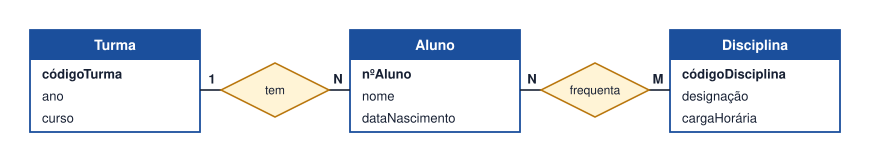
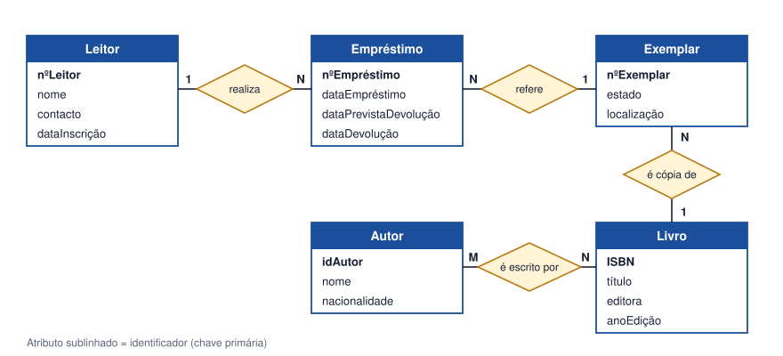

Tema 11 · Modelação de dados
Modelo Entidade-Relacionamento
Regras e construção de diagramas
O Modelo Entidade-Relacionamento (ER) reúne entidades, atributos e relacionamentos num diagrama (DER) que representa os dados do sistema. É o principal modelo da fase de análise para quem quer construir uma base de dados.
Como construir um DER
- Sublinhar os substantivos da descrição do problema: são candidatos a entidades ou atributos.
- Decidir o que é entidade (tem vários atributos e várias ocorrências) e o que é atributo (descreve uma entidade).
- Escolher o identificador de cada entidade.
- Identificar os relacionamentos pelos verbos da descrição e definir a cardinalidade.
- Resolver os N:M com entidades associativas, sempre que tenham dados próprios.
- Rever: cada requisito está representado? Há dados repetidos?
Regras de boa construção
- Nomes de entidades no singular e com maiúscula inicial (Leitor, não Leitores).
- Toda a entidade tem um identificador.
- Os relacionamentos têm nome e cardinalidade nas duas extremidades.
- Os mesmos dados não aparecem em duas entidades.
- Não se representam atributos derivados de forma duplicada nem chaves estrangeiras (isso fica para o modelo relacional).
Exemplo: escola

Lê-se: «uma Turma tem muitos Alunos, mas cada Aluno pertence a uma Turma» e «um Aluno frequenta muitas Disciplinas e cada Disciplina é frequentada por muitos Alunos».
Atividade
Criar o modelo Entidade-Relacionamento de uma biblioteca
Crie o DER de uma biblioteca a partir da seguinte descrição:
Os leitores inscrevem-se na biblioteca e recebem um número de leitor. A biblioteca tem livros, identificados por ISBN; de cada livro podem existir vários exemplares físicos. Cada livro é escrito por um ou mais autores, e um autor pode ter escrito vários livros. Os leitores requisitam exemplares: regista-se a data do empréstimo, a data prevista e a data de devolução.
Ver proposta de resolução

- Entidades: Leitor, Empréstimo, Exemplar, Livro, Autor.
- Leitor 1:N Empréstimo: um leitor realiza vários empréstimos; cada empréstimo é de um só leitor.
- Empréstimo N:1 Exemplar: simplificação — cada empréstimo regista um exemplar. Se um empréstimo puder incluir vários, seria preciso uma entidade de linha de empréstimo.
- Livro 1:N Exemplar: um livro tem vários exemplares físicos.
- Livro N:M Autor: resolve-se, no modelo relacional, com uma tabela associativa.
Em resumo
- O DER representa entidades, atributos e relacionamentos do sistema.
- Constrói-se a partir da descrição do problema: substantivos, verbos, identificadores, cardinalidades.
- As regras de boa construção evitam redundância e ambiguidade.